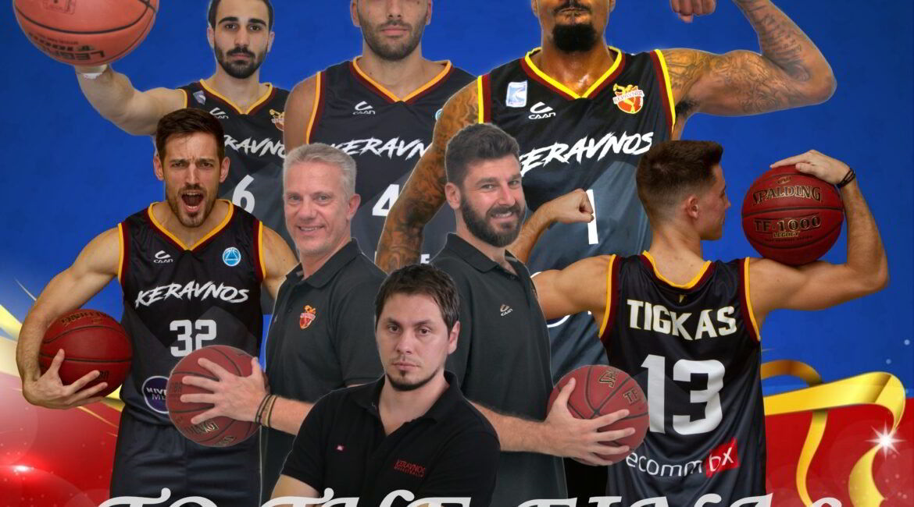

<!--#set var="title" value="Главная страница" -->
<!--#include virtual="/parts/head.html" -->
<!--#include virtual="/parts/navbar.html" -->
<div class="content articles col-md-12">
    <div class="container">
        <div class="row">
            <main class="col-md-9 articles">
                <div class="container">
                    <h1 class="content__title">busketball</h1>
                    <article>
                        <div class="content__text">
                            <h2>Cyprus basketball team “Keravnos”

                            </h2>
                            
                            <p>Keravnos Strovolou is one of the oldest Athletic Clubs in Cyprus and was established in
                                1926. The
                                club is based in Strovolos the largest Nicosia suburb and their home court is the Costas
                                Papaellinas
                                Indoor Arena with a capacity of 2,000 spectators. The Keravnos name (in Greek = THUNDER)
                                is
                                associated with the football player Savvas Panayides who used to play in the mid-1920’s
                                for the
                                club’s football team and was known as the “Thunder” for his legendary strong shooting
                                and striking
                                ability.</p>

                            <p>Keravnos Athletic Club is one of the most famous and historical clubs in Cyprus sports
                                history. It
                                has been fully committed through τhe years to its core values such as: <br>
                                Sporting excellence<br>
                                Youth development<br>
                                Fair play<br>
                                Social responsibility<br>

                            <p>Like most Athletic Clubs in Cyprus, Keravnos is managed by a Committee and a President,
                                directly
                                elected from the members of the club. The club’s president since 1996 is the well known
                                businessman
                                Mr. Paris C. Papaellinas, who is also the main sponsor of the club for the last 20
                                years. He is a
                                former player of Keravnos basketball team during the period 1972-1991. He was also a
                                member and
                                co-captain of the Cyprus National Team and a Gold Medal Winner at the Games of the Small
                                States of
                                Europe held in San Marino in 1985. Mr. Papaellinas has many professional and sports
                                awards which
                                reflect the values of the Club. Among others, he was appointed as Cyprus FAIR PLAY
                                Ambassador during
                                2011-2013 and was awarded the ‘’Sport and Social Responsibility’’ Award by the
                                International Olympic
                                Committee (IOC) in 2012.</p>

                            <div class="text__blur"></div>
                        </div>
                    </article>
                    <hr>
                    <article>
                        <div class="content__text">
                            <h2>Greatest basketball player Michael Jordan
                            </h2>
                            
                            <p>Michael Jordan, in full Michael Jeffrey Jordan, byname Air Jordan, (born February 17,
                                1963, Brooklyn,
                                New York, U.S.), American collegiate and professional basketball player widely
                                considered to be one
                                of the greatest all-around players in the history of the game. He led the Chicago Bulls
                                to six
                                National Basketball Association (NBA) championships (1991–93, 1996–98).</p>

                            <p>Jordan grew up in Wilmington, North Carolina, and entered the University of North
                                Carolina at Chapel
                                Hill in 1981. As a freshman, he made the winning basket against Georgetown in the 1982
                                national
                                championship game. Jordan was named College Player of the Year in both his sophomore and
                                junior
                                years, leaving North Carolina after his junior year. He led the U.S. basketball team to
                                Olympic gold
                                medals in 1984 in Los Angeles and in 1992 in Barcelona, Spain.</p>

                            <p>During his playing career, Jordan, a guard, standing 6 feet 6 inches (1.98 metres) tall,
                                was an
                                exceptionally talented shooter and passer and a tenacious defender. He earned the
                                nickname “Air
                                Jordan” because of his extraordinary leaping ability and acrobatic maneuvers, and his
                                popularity
                                reached heights few athletes (or celebrities of any sort) have known. He accumulated
                                millions of
                                dollars from endorsements, most notably for his Air Jordan basketball shoes. He also
                                made a
                                successful film, Space Jam (1996), in which he starred with animated characters Bugs
                                Bunny and Daffy
                                Duck. In 1996 the NBA named him one of the 50 , and in 2009 he was elected to the
                                Naismith Memorial
                                Basketball Hall of Fame. He was awarded the Presidential Medal of Freedom in 2016.</p>


                        </div>
                    </article>
                </div>
                <!-- /.container -->
            </main>
            <!-- /.content -->
            <aside class="flex-shrink-0 p-3 bg-white col-md-3">
                <a href="/" class="d-flex align-items-center pb-3 mb-3 link-dark text-decoration-none border-bottom">
                    <svg class="bi pe-none me-2" width="30" height="24">
                        <use xlink:href="#bootstrap"></use>
                    </svg>
                    <span class="fs-5 fw-semibold">Реклама</span>
                </a>
                <div class="advert1">
                    <span class="close__advert">X</span>
                    <a class="" href="/">
                        </a>
                </div>
                <div class="advert2">
                    <span class="close__advert">X</span>
                    <a class="" href="/english.html">
                        </a>
                </div>
            </aside>
            <!-- ./ col-md-3 -->
        </div>
    </div>
</div>

<!--#include virtual="/parts/footer.html" -->